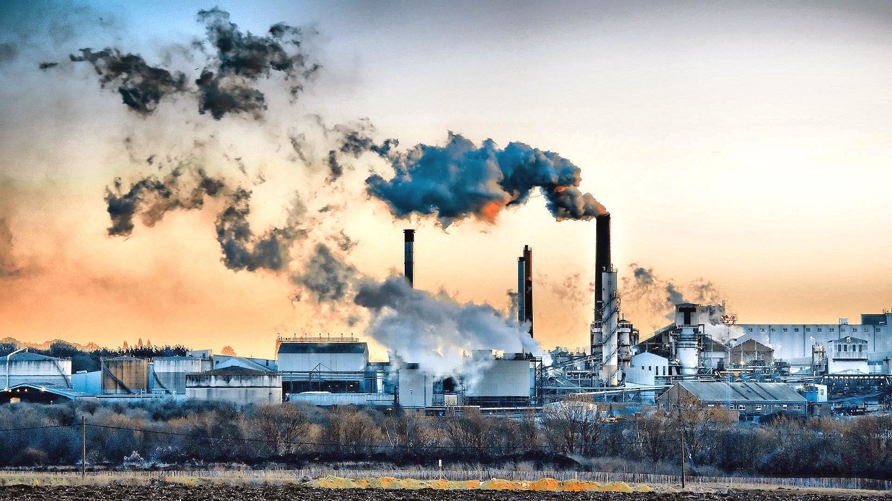

Education

From the basic curriculum, the level of education has changed and still on progress because of the fastly progressing technology. One of the main factors why education has gone through such achievement is because of the so called "Knowledge Explosion Generation" which describes the world today. Technology had played a very big role in the improvement education throughout the world. There are lots and lots of available resources that students can acquire to widen their knowledge, to self-expplore, and to create thier own innovations based on their skills and abilities.Althouh there are a lot of positive changes in education today, it cannot be denied that the negative changes are also competing with the positives.Common Issues are listed below:
Bullying
Bullying is one of the most rampant problem for students, in elementary, high school, and even in college. Bullying does not only mean physical abuse but also include verbal and cyber. Bullying had caused a lot of suicide casesof youths every year. The worst effect of bullying is death and there are many more ill effects bullied youths experience such as depression, lost of self-confidence, self-isolation and fear.
Economy
World wide economy. Relating to the results of researches made and submitted, the world's economy was drastically fluctuating into crisis. One of the most known cause of poor economy status of countries is the wide range of unemployment. Every year, unemployment rate increases.
Current Environmental Issues
One of the top environmental issues that the world faces today was the fastly growing population of humans. By the month of March 2016, the current population in the world was estimated to be 7.4 billion, now was already 7.5 billion and was expected to continuosly grow to 11.2 billion by the year 2100.Global population is curently growing at a rate of around 1.13% per year. The current population change is estimated at around 80 million per year. The global growth rate peaked at 2.2% in 1963 and then declined to 1.1% as of 2012. ("Exponential Population Growth". Kivu, May 10, 2002. Retrieved July 22, 2013)
The world's population has reached 7 billion on October 31, 2011 according to the United Nations Population Fund and on March 12, 2012 according to The United States Census Bureau.
From the results of the different researches made, the current world population ranked by the most populated countries.First, China, having 1,383,472,824, yearly growth, 0.427% of the whole world's population. Next, India having a population of 1,329,857,714 and having a yearly growth of 1.184%. Third was United States having a population of 324,576,927 and a yearly increase of 0.727% yearly. Those are the top three most populated countries in the whole world.
But those are not the only one that affect the current state of the world today. Listed are some of the most rampant issues:
Climate Change
Improper Garbage Disposal
Pollution

Natural Disasters
Health Issues
Physical Hazards, and their Adverse Health Effects
Although you will have heard or read a great deal about the environmental consequences of global warming, man will probably be affected through famine, or war long before the health of the population as a whole is harmed to a serious degree by the temperature change. However increasing extremes of temperature, as a result of climatic change, could result in increased mortality even in temperate climates.
Important issues concerning physical hazards include those relating to health effects of electromagnetic radiation and ionising radiation. If one excludes the occupational environment, then noise and other physical hazards may present a nuisance to many inhabitants, and impair general well being. Environmental noise does not usually contribute to deafness but notable exceptions may include noisy discotheques and "personal stereos".
Electromagnetic radiation ranges from low frequency,relatively low energy, radiation such as radio and microwaves through to infra red, visible light, ultraviolet, X-rays and gamma rays. These last as well as other forms of radioactivity such as high energy subatomic particles (e.g. electrons - Beta rays) can cause intracellular ionisation and are therefore called ionising radiation. Exposure to ultraviolet (UV) radiation carries a increased risk of skin cancer such as melanoma, and of cataracts which are to an extent exposure related. Some pollutants such as chlorofluorocarbons (CFCs) used as refrigerants or in aerosol propellants or in the manufacture of certain plastics can damage the "ozone layer" in the higher atmosphere (stratosphere) and thus allow more UV light to reach us, and harm us directly. Ultraviolet light may also cause harm indirectly by contributing to an increase in ozone in the troposphere (the air we breathe) - see below underchemical hazards, or elsewhere in connection with air quality.
Radioactivity is associated with an exposure dependent risk of some cancers notably leukaemia. Contrary to popular belief however, most radiation to which the average person is exposed is natural in origin, and, of the man made sources, medical diagnosis and treatment is on average the largest source to the individual. A very important issue is the extent to which radon gas arising from certain rock types beneath dwellings can contribute to cancer risk. According to some estimates it could result in a few thousand cancer deaths per year in the U.K. (but still probably less than one twentieth of the cancer deaths alone caused by tobacco smoking).
Ionising radiation from the nuclear industry and from fallout from detonations contributes less than 1% of the annual average dose to inhabitants of the U.K. The explanation for leukaemia clusters around nuclear power plants is not yet resolved. Similar clustering can occur in other parts of the country. The effect of viral infections associated with population shifts may be important but requires further study.
Ionising radiation from the nuclear industry and from fallout from detonations contributes less than 1% of the annual average dose to inhabitants of the U.K. The explanation for leukaemia clusters around nuclear power plants is not yet resolved. Similar clustering can occur in other parts of the country. The effect of viral infections associated with population shifts may be important but requires further study.
One of the things that the world is worrying today is the sudden change in our climate because of wide range pollution, in large bodies of waters, land, and air. Clilmate change has beeen a very contoversial issue and is also the case of extinction of many species that cannot survive in the changing atmosphere. Ozone Layer depletion is one of the causes of climate change which has also brought skin cancer specially to countries near the ozone hole. Not only human beings, but also the other organism suffer because of their lost of habitat, food shortages, polluted environment which can drive them away or worst, can kill them and made their species extinct. These are only some of the severe effects of Climate Change.
One of the most difficukt to manage is waste. Tons and tons of garbages are being collected everyday. But where are these garbages stored? Sad to say, but we live with our own garbage because of improper garbage disposal. People do not observe proper garbage segregation, they throw their waste every where they want. What can we expect then? Tons of garbages have also killed million lives, yes, almost every year. This is one most severe changes that we need to care about before it's too late.
One of the reasons why people get sick is because of the very polluted environment. Dirty sorrounding are the causes of different illnesses that could infect residents and even animals in it. Beside garbage pollution, air pollution is also a very rampant problem because of it's harm. Water pollution is also severe, contaminated waters can bring illnesses to users once they consumed it.Marine life is also greatly affected because of water pollution caused by oil spills, waste from different industries that are drained into bodies of water and being contaminated by different harmful chemmicals that kill water organisms.
Recently, Philippines was strike by a very strong typhoon, Lawin and left many places in the country with great disaster and weeping. Many houses are washed out and many families are still asking for help. This show that more tragedies are yet to come and will make humankind suffer because of irresponsibility and greed. This natural disasters might not have been that disastruous if mankind knew its limitations.
MANILA – Super typhoon Lawin made landfall in Peñablanca, Cagayan at 11 p.m. on Wednesday, PAGASA said. The super typhoon, which has a massive 800-kilometer diameter, is expected to wreak havoc in northern and eastern Luzon, bringing moderate to heavy rains in affected areas. According to PAGASA, the super typhoon will cross the provinces of Apayao and Ilocos Norte, before exiting the Philippine area of responsibility Thursday evening. Five areas were placed under storm signal number 5. These are Cagayan, Isabela, Kalinga, Apayao, Northern Abra and Ilocos Norte. This is the first time state weather bureau PAGASA issued a storm signal number 5. Meanwhile, the rest of Abra, Ilocos Sur, Mt. Province, Ifugao and Calayan Group of Islands were placed under storm signal number 4.
Nature Preservation
A nature reserve (natural reserve, bioreserve, (natural/nature) preserve or (national/nature) conserve) is a protected area of importance for wildlife, flora, fauna or features of geological or other special interest, which is reserved and managed for conservation and to provide special opportunities for study or research. Nature reserves may be designated by government institutions in some countries, or by private landowners, such as charities and research institutions, regardless of nationality. Nature reserves fall into different IUCN categories depending on the level of protection afforded by local laws.
Conservation and preservation are closely linked and may indeed seem to mean the same thing. Both terms involve a degree of protection, but how that is protection is carried out is the key difference. Conservation is generally associated with the protection of natural resources, while preservation is associated with the protection of buildings, objects, and landscapes. Put simply conservation seeks the proper use of nature, while preservation seeks protection of nature from use.
Preservation of the natural environment is essential for maintaining community sustainability. This section presents various approaches and techniques used successfully in different communities to protect and restore their natural resources.
-
Water
Adequate water supplies of high quality are necessary both for community use and local ecosystems. Communities and jurisdictions must work together to assure an adequate water supply to meet future needs. This section presents resources to aid in that effort.
-
Energy
Communities require energy. Nonrenewable sources for power generation, home and workplace, and transportation cause pollution and its harmful impacts. Energy conservation and the use of renewable fuels provide cost-effective and more sustainable alternatives. This section contains resources available to make energy use more efficient.
-
Air and Climate
Both the natural ecosystem and human health can be adversely impacted by declining air quality and climatic change. Communities can preserve air quality by limiting or eliminating the discharge of harmful chemicals into the air and by minimizing the sources of air pollution. This section contains resources and approaches that address air quality and climate change.
-
Biodiversity
Biodiversity is particularly important for creating sustainability because of the specialized roles each species plays in maintaining ecological balance. Communities can promote healthy wildlife by supporting integrative approaches for managing, protecting, and enhancing wildlife populations and habitats appropriate to their area. Some examples are given here.
-
Land, Forest, and Ecosystem
While providing a protective covering for soil, water, and the atmosphere, forests are also renewable sources of an endless variety of products. In a healthy ecosystem, policies and programs must balance economic and conservation needs. This section highlights cases where communities have developed land use practices and businesses that both conserve ecosystems and enhance local economies.